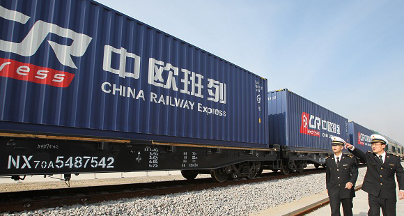

借力"一带一路" 株洲企业壮大"朋友圈"
2017.05.16 系统管理员  60人已阅读
60人已阅读

追随国家“一带一路”战略大胆走出去，株洲企业的朋友圈越来越壮大。
株洲海关数据统计，2013年以来，株洲企业与“一带一路”沿线64个国家和地区贸易往来，2016年进出口总额达31.6亿元人民币，今年1至4月这一数据为10.4亿元人民币。
“株洲制造”闪耀“一带一路”
今年4月，中车长江株洲分公司生产的列车100辆连号X70型集装箱平车，担当长沙至德国杜伊斯堡的中欧班列主角，开启了一场中欧跨境游。
中欧班列是中国开往欧洲的快速货物专列，被誉为“铁轨上的丝绸之路”。百辆平车，从长沙霞凝货场始发，由新疆阿拉山口出境，途经哈萨克斯